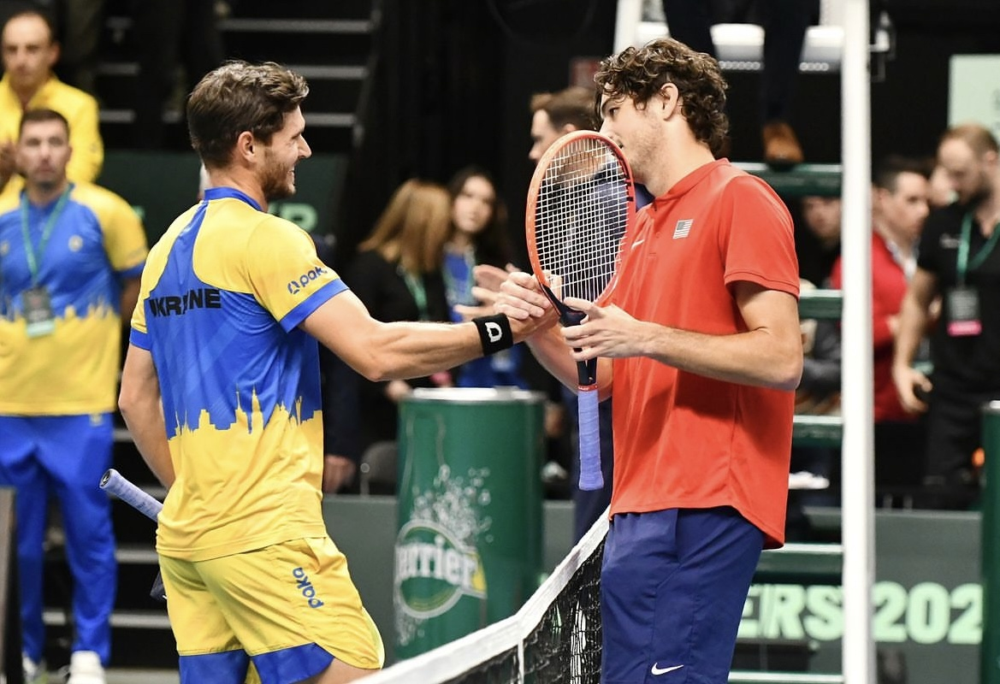
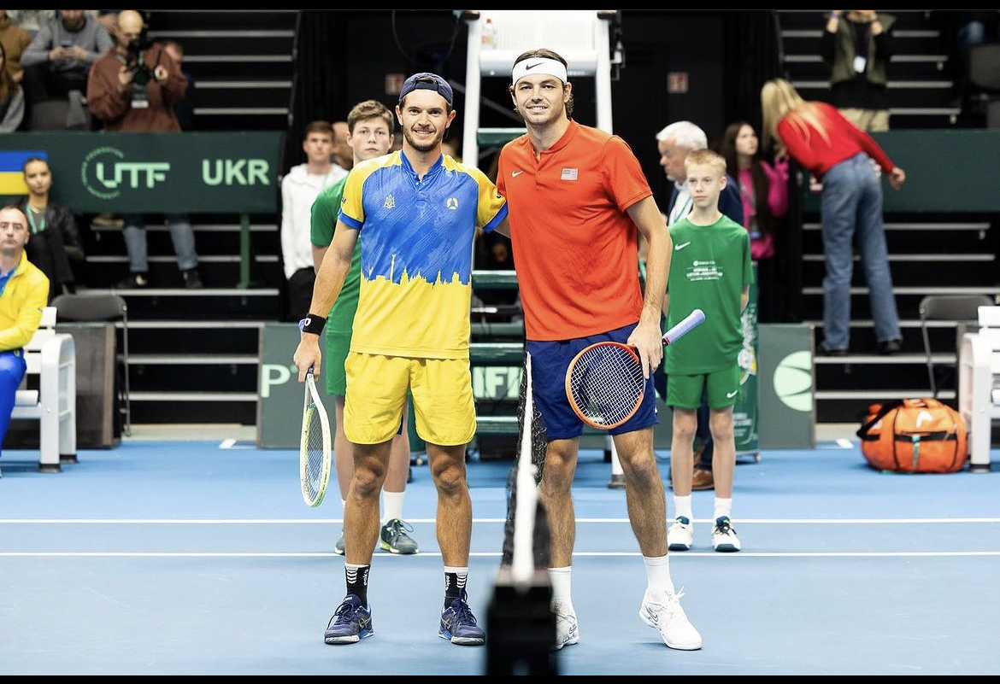

"In a sport where careers are often decided by age 18, Vladyslav Orlov broke the rules."
Turning professional at 25—an age when many are considering retirement—he entered the ATP Tour not with a federation's backing, but with sheer will.
His journey is defined by contrast. While climbing to a career-high ATP 350 singles and 209 doubles, his home base in Kharkiv, Ukraine, became a war zone. Displaced but undeterred, Vladyslav turned the global tour into his home, competing across continents while representing the resilience of his nation.
He is not just a tennis player. He is a testament to the fact that it is never too late to start, and impossible to quit.
When playing for Ukraine, Vladyslav elevates his game. A key member of the Davis Cup squad, he secured the decisive victory against Colombia in 2023, sealing the tie for his nation. His experience extends to facing the sport's elite, including a high-profile singles clash against World No. 9 Taylor Fritz (USA) in 2024.
Competing at the highest level: Highlights from the 2024 encounter against World No. 9 Taylor Fritz.


A testament to resilience and the unconventional path to the top of professional tennis.